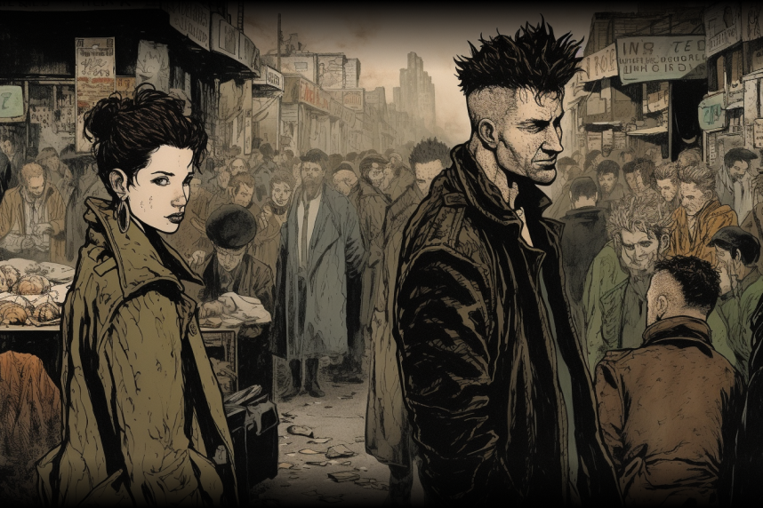
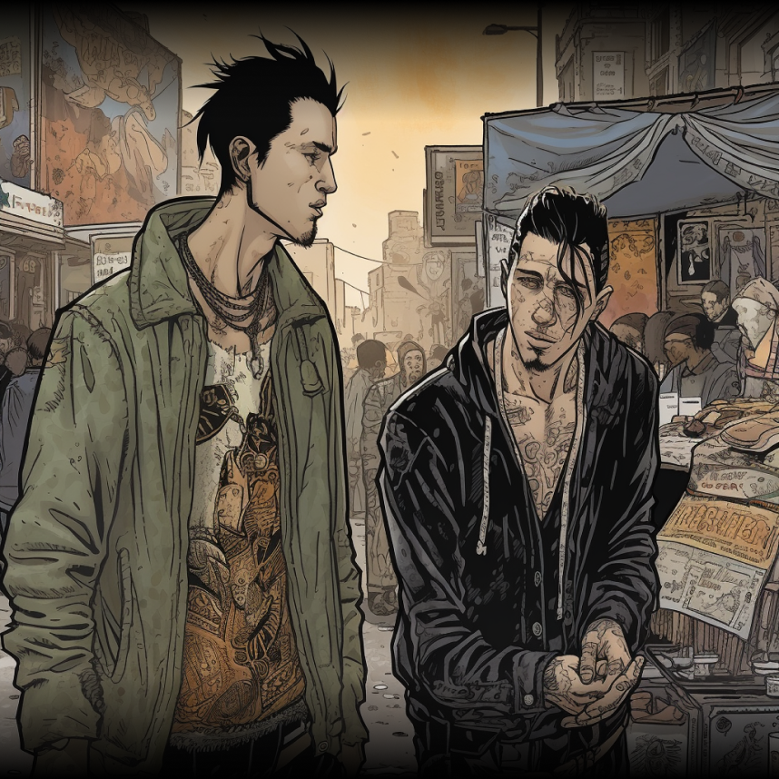
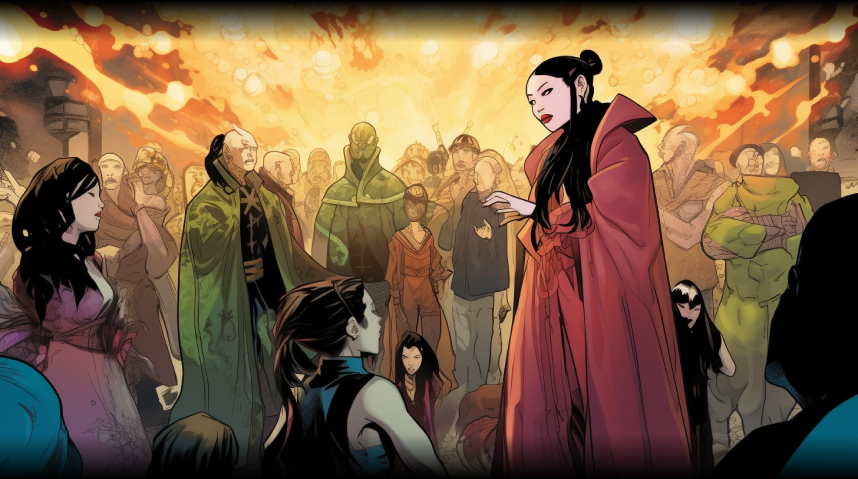
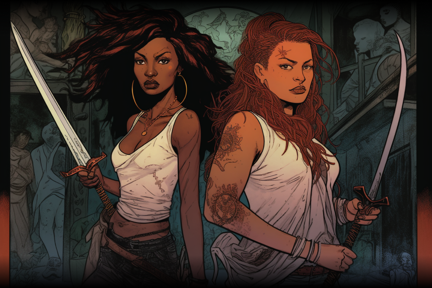

OPHEUS EXILED
BY STANDARD DEVIANTS
My heart is a symphony, but it plays a mournful tune since the day she left me. The strings of my soul are forever broken, for she was the melody that made it whole.
I cannot bear the weight of this loneliness any longer. Every day, I am haunted by the memory of my beloved Eurydice and the pain of losing her again and again. My music no longer brings me solace, for it only serves as a reminder of what I have lost. I am trapped in this world.
Male Punk: Excuse me, do you think Orpheus is lost? Female Punk: Lost? No, he's just searching for the right notes to play his heart out.
Male Punk: Bro, you look like you've lost your melody. Need a hand finding it again?
At a party nearby: Thracian Healer: My heart is full of compassion and my hands are capable of healing. Let me help ease your suffering and guide you towards a healthier, happier life.
Thracian Leader: You may have the power to enchant with your music, but do not mistake it for the power to control me. Orpheus: Noooo!